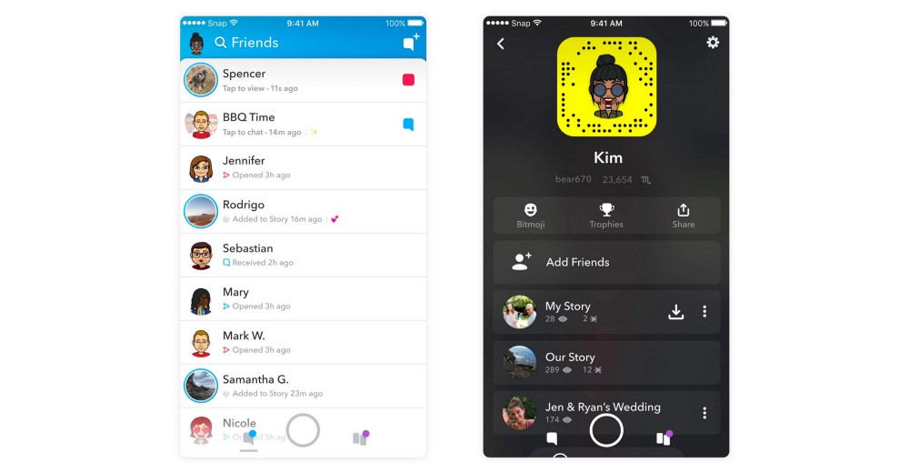

Una página con una interacción intuitiva es el resultado de utilizar el Design Thinking
Ya sabemos que es un proceso que nos asegura que no estamos construyendo una página basada en nuestras suposiciones, sino en las necesidades reales de los visitantes. Se divide en cinco etapas fundamentales
Empatizar
Definir
Idear
Prototipar
Testear
Para lograr una interacción intuitiva en una web, se deben aplicar los siguientes principios:
Así es, se necesita más que los principios ya mencionados, las leyes UX son reglas de diseño web que se basan en principios psicológicos que pretenden crear interfaces que sean accesibles y fáciles de usar en todos los ámbitos.
-
Ley de Jakob:
"La gente pasa la mayor parte del tiempo en otros sitios web, lo que indica que los usuarios prefieren utilizar su sitio web de la misma manera que cualquier otro sitio web que conocen." Jakob Nielsen, consultor danés de usabilidad web, investigador de la interacción hombre-computadora y cofundador de Nielsen Norman Group.
La importancia de la familiaridad dentro de una interfaz argumentando que los usuarios prefieren interfaces que funcionen de manera similar a las interfaces con las que ya están familiarizado.

-
Jerarquía Visual:
Necesitamos ordenar para comunicar. La jerarquía visual forma parte de todo buen diseño y gracias a ella vamos a conseguir guiar al ojo del espectador, aclarándole qué es lo más y lo menos importante de nuestra pieza. Y es que de esto trata la jerarquía visual, de trabajar con todos los recursos que estén a nuestro alcance para ordenar, organizar y otorgar de prioridad a nuestro contenido.
Para más información te recomiendo ir a este blog: https://heyjaime.com/blog/jerarquia-visual/
Y si prefieres aprender con un vídeo entonces: https://www.youtube.com/watch?v=_F4MTXXydWA
- Navegación predecible: Los menús deben tener nombres claros y evitar el uso de jerga interna de la empresa. Si el usuario tiene que adivinar qué hay detrás de un enlace, la interacción ya no es intuitiva.
- Retroalimentación inmediata (Feedback): La web debe "hablarle" al usuario. Si hacen clic en un botón, este debe cambiar de color; si envían un formulario, debe aparecer un mensaje de éxito; si hay un error, debe explicar claramente cómo solucionarlo.
La interacción intuitiva no se logra por arte de magia ni por el "buen gusto" del diseñador
Es el resultado directo de aplicar el Design Thinking. Al empatizar, descubres qué es intuitivo para tu audiencia específica (lo que es intuitivo para un adolescente en TikTok no lo es para un adulto mayor en una web de banco). Al prototipar y testear, confirmas si el diseño que ideaste es realmente tan fácil de usar como pensabas, corrigiendo los errores antes de escribir una sola línea de código.